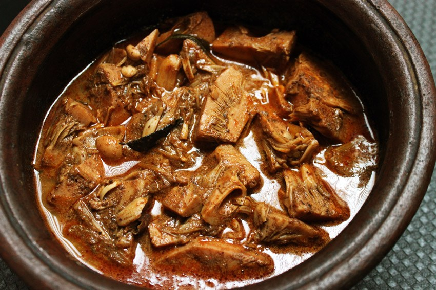

YUMMY DISHES
Polos Curry/Polos Ambula
INGREDIENTS(for 4 persons)
500g young jackfruit, cut into bite-sized pieces
1 large finely chopped onion
2 chopped tomatoes
1/4 cup coconut scraped
2 tbsp olive oil
1 tsp. mustard seeds
1 teaspoon ground fenugreek
2-3 sliced green chilies
1 curry leaf sprig
1 tablespoon curry powder, roasted
1 tablespoon turmeric powder
1 teaspoon chili powder, to taste
1 cup heavy coconut milk
Season with salt to taste

HOW TO COOK
Begin by chopping 500g of young jackfruit into bite-sized pieces to make Polos Curry for four people. Finely
chop onions in a pan with oil until golden brown, then add green chilies, curry leaves, and tomatoes. Cook until the
roasted curry powder, turmeric powder, and chili powder are fragrant. Incorporate the jackfruit, making sure it
is well coated with the spices. Simmer until the jackfruit is tender, then add a cup of thick coconut milk and season
with salt. Simmer for a few minutes more after adding a fine paste of scraped coconut, adjusting seasoning to taste. Serve
immediately with rice or bread. Enjoy your tasty Polos Curry!